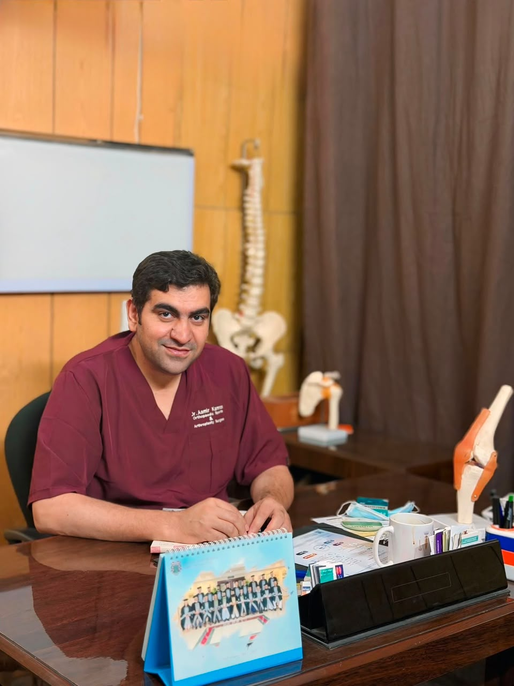

Dr. Aamir Kamran
Consultant Orthopaedic, Sports & Joint Replacement Surgeon
Consultant Orthopaedic & Sports Unit, Hayatabad Medical Complex, Peshawar
- MBBS
- FCPS Orthopaedic Surgery
- CHPE (KMU)
- CHR (KMU)
- Fellowship in Joint Replacement Surgery
- Fellowship in Arthroscopy & Sports Surgery
Room 16, First Floor, Habib Medical Complex, Dabgari Garden, Peshawar
Working as Consultant Orthopaedic, Sports, and Joint Replacement Surgeon at Abu Usman Hospital. Abu Usman Hospital provides all facilities under one roof with one of the best operation theatre environments for successful…